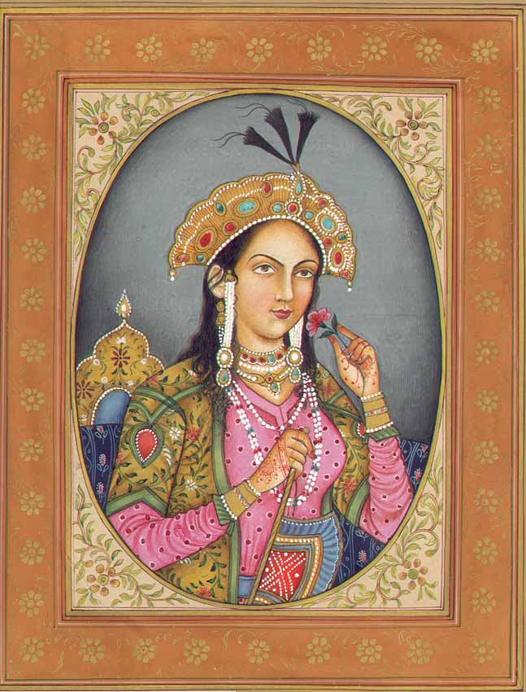
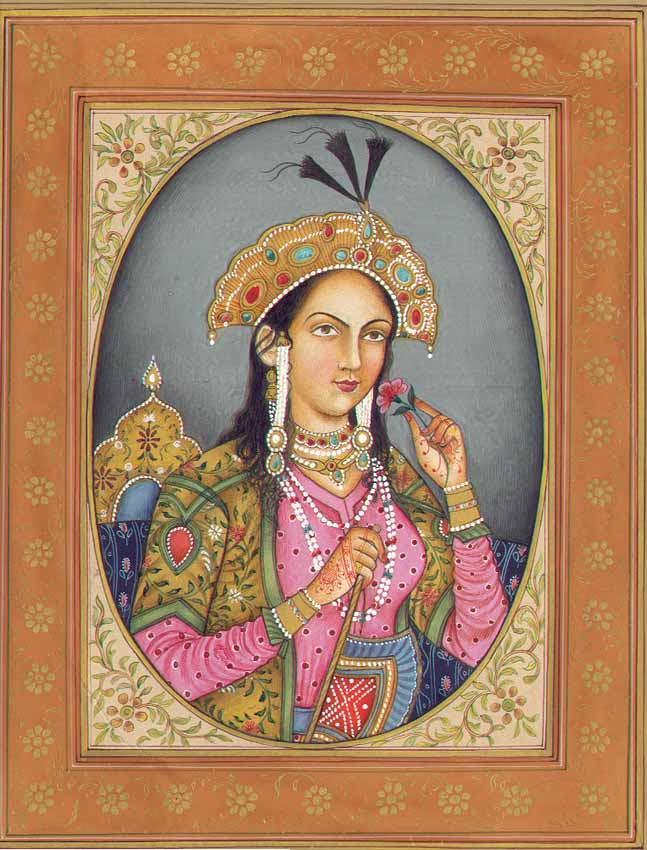

The Taj Mahal is an ivory-white marble mausoleum on the south bank of the Yamuna river in the Indian city of Agra. It was commissioned in 1632 by the mugal empire, shahjahan (reigned from 1628 to 1658), to house the tomb of his favourite wife, mumthaz mahal . The tomb is the centrepiece of a 17-hectare (42-acre)complex, which includes a mosque and a guest house, and is set in formal gardens bounded on three sides by a crenellated wall.
Construction of the mausoleum was essentially completed in 1643 but work continued on other phases of the project for another 10 years. The Taj Mahal complex is believed to have been completed in its entirety in 1653 at a cost estimated at the time to be around 32 million rupees, which in 2015 would be approximately 52.8 billion rupees (U.S. $827 million). The construction project employed some 20,000 artisans under the guidance of a board of architects led by the court architect to the emperor, usthad ahmad lahori.
The Taj Mahal was designated as a UNESCO World Heritage Site in 1983 for being “the jewel of Muslim art in India and one of the universally admired masterpieces of the world’s heritage”. It is regarded by many as the best example of Mughal architecture and a symbol of India’s rich history. The Taj Mahal attracts 7–8 million visitors a year. In 2007, it was declared a winner of the New 7 Wonders of the World (2000–2007) initiative.
The Taj Mahal was commissioned by shahjahan in 1631, to be built in the memory of his wife mumthaz mahal . who died on 17 June that year, while giving birth to their 14th child, gauhar begum. Construction started in 1632, and the mausoleum was completed in 1648, while the surrounding buildings and garden were finished five years later. The imperial court documenting Shah Jahan's grief after the death of Mumtaz Mahal illustrates the love story held as the inspiration for the Taj Mahal. According to contemporary historians Muhammad Amin Qazvini, Abdul Hamid Lahori and Muhammad Saleh Kamboh, he did not show the same level of affection to others as he had shown her while she was alive. He avoided royal affairs for a week due to his grief, along with giving up listening to music and dressing lavishly for two years. Shah Jahan was enamored by the beauty of the land at the south side of Agra on which a mansion belonging to Raja Jai Singh I stood. This place was chosen for the construction of Mumtaz's tomb by Shah Jahan and Jai Singh agreed to donate it to the emperor.
 
